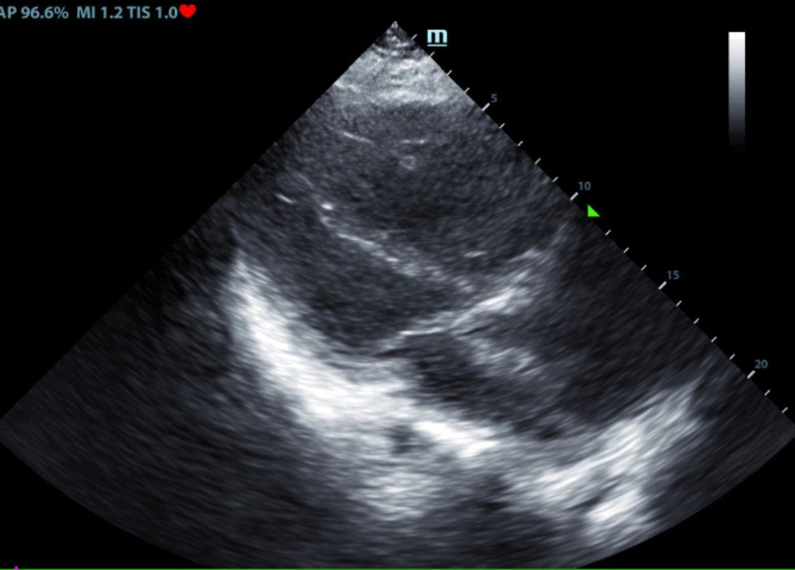
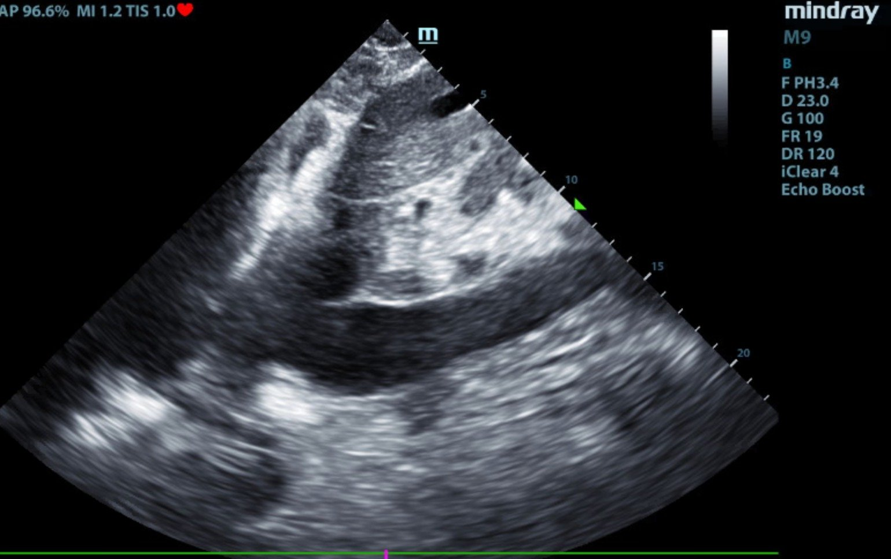
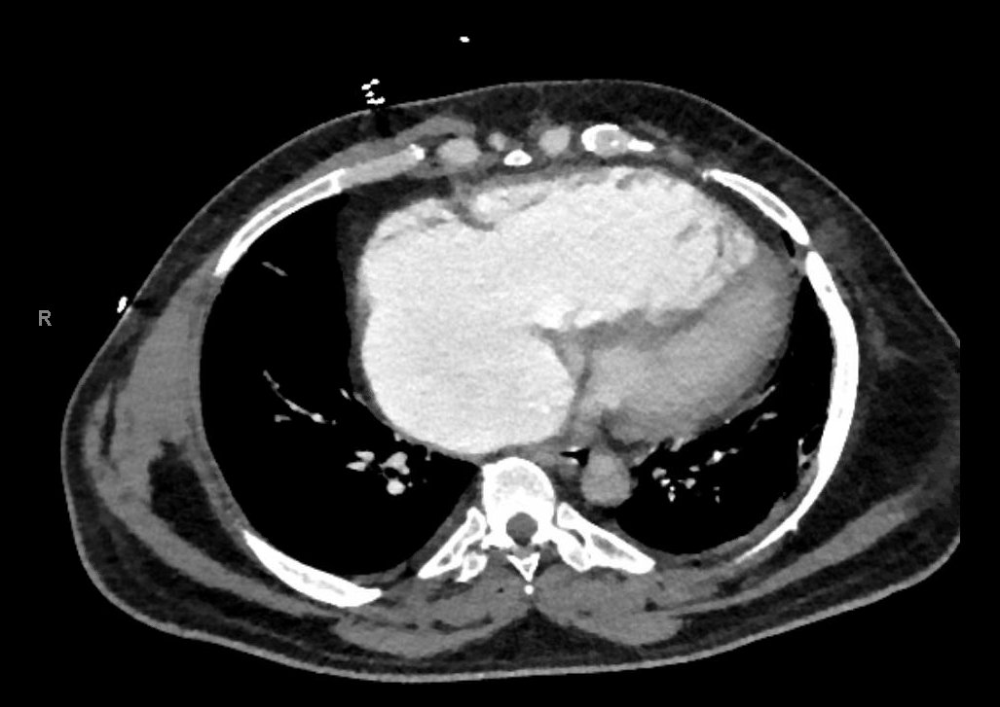
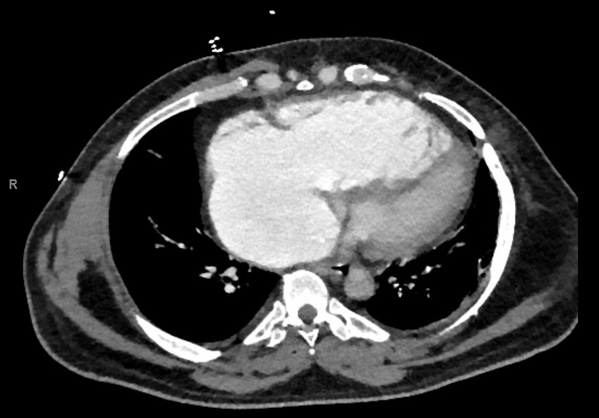
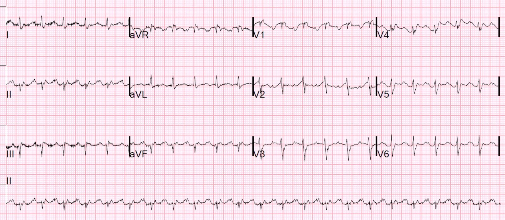
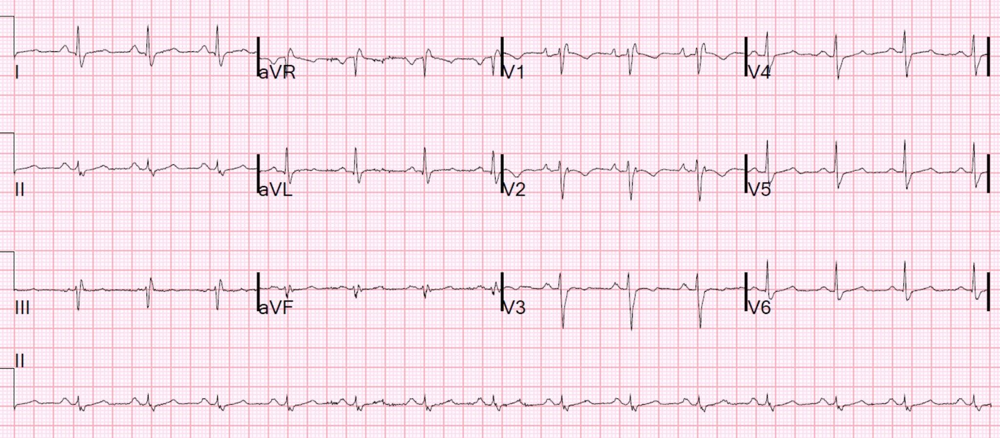
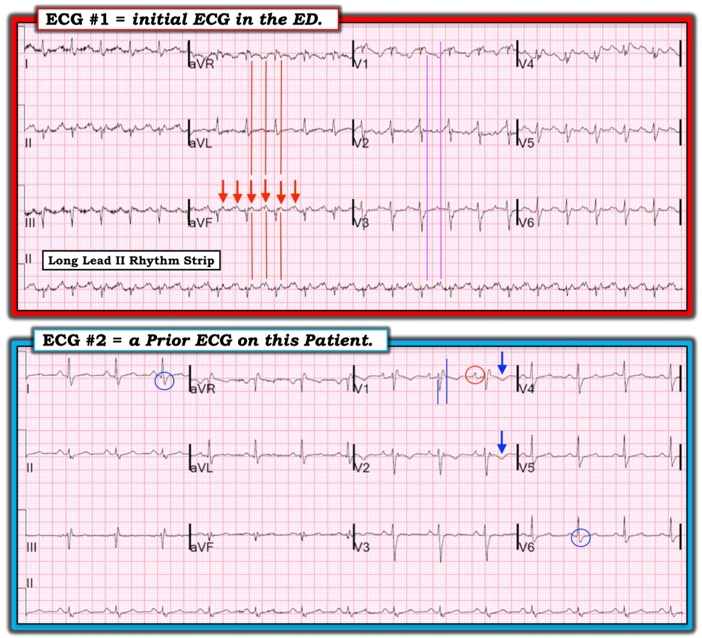

09/02/2019 — Suy tim phải và nhịp nhanh.
Bản dịch tiếng Việt của bài "Right sided heart failure and tachycardia." – Dr. Smith’s ECG Blog. Giữ nguyên toàn bộ 10 hình ảnh của bản gốc.
Một bệnh nhân nam trung niên đến khám vì nhịp nhanh, khó thở và phù hai chân 4+.

Hôm đó vừa có một trận bão băng, và đó là ngày bận rộn nhất trong lịch sử khoa cấp cứu của chúng tôi vì các ca té ngã. Tối hôm ấy tôi đã nắn 12 ca gãy xương và luôn chân luôn tay. Tôi nhìn bản ghi này, thấy thành phần âm của sóng P ở V1, và lập tức chẩn đoán nhịp nhanh xoang.
Tôi làm siêu âm tim tại giường:


Nghe phổi trong, và không có đường B.
Tình trạng quá tải thể tích được xác nhận bằng hình này:


Như vậy về lâm sàng bệnh nhân có suy tim phải, khởi phát bán cấp. Nếu tôi chỉ cần xem kỹ hồ sơ bệnh án của bệnh nhân, tôi đã thấy rằng tình trạng này không hoàn toàn mới, mà là một đợt nặng lên của một vấn đề mạn tính.
Vì không làm việc đó, thuyên tắc phổi nằm trong chẩn đoán phân biệt và chúng tôi đã chụp CT mạch phổi:


Một lát cắt CT khác cho thấy cùng hình ảnh:


Một nhĩ phải giãn rất lớn
Sau đó, tôi xem lại điện tâm đồ đầu tiên; đây là bản ghi đó một lần nữa:


Tại sao sóng nhĩ ở V1 lại có thành phần âm?
Thông thường, một trong những cách nhanh để phân biệt nhịp xoang với cuồng nhĩ là tìm sóng nhĩ hai pha dạng lên-xuống (nhịp xoang) so với sóng nhĩ dương (cuồng nhĩ).
Hóa ra có một điện tâm đồ cũ để so sánh:


Sóng P vẫn hai pha như thường lệ, nhưng thành phần “lên” (là thành phần nhĩ phải) lớn hơn nhiều so với sóng lệch âm theo sau (đại diện cho nhĩ trái)
Tại sao?
Câu trả lời liên quan đến tình trạng phì đại nhĩ phải rất nặng. Bình thường, sóng P ở V1 có hai pha. Phần dương ban đầu là nhĩ phải và phần sau, đảo ngược, là nhĩ trái. Trong ca này, nhĩ phải lớn rất nhiều và làm cho gần như toàn bộ sóng P dương.
Vấn đề còn phức tạp hơn khi bệnh nhân chuyển sang cuồng nhĩ, như trong lần đến viện này: sóng cuồng nhĩ có một thành phần âm lớn do lớn nhĩ phải.
Do đó, hình thái sóng nhĩ ở bệnh nhân này bị đảo ngược, đánh lừa thầy thuốc (chính thầy thuốc này) tin rằng đó là nhịp xoang trong khi thực ra là cuồng nhĩ.
Và cuồng nhĩ chính là căn nguyên thúc đẩy làm suy tim phải của bệnh nhân nặng lên.
Bệnh nhân cần dùng furosemide và triệt đốt cuồng nhĩ.
Siêu âm tim chính thức:
Phân suất tống máu thất trái ước tính là 50-55 %.
Không phát hiện rối loạn vận động thành thất trái.
Hở van hai lá mức độ nhẹ.
Áp lực tâm thu động mạch phổi ước tính là 20 mmHg + áp lực nhĩ phải.
Lớn thất phải .
Vận động nghịch thường của vách liên thất mức độ nặng.
Giảm chức năng tâm thu thất phải.
Hở van ba lá mức độ nặng.
Lớn nhĩ phải.
Dựa trên hình ảnh tĩnh mạch chủ dưới (IVC), áp lực nhĩ phải tăng.
NHẬN XÉT BỔ SUNG
Chức năng thất phải có lẽ xấu hơn so với lần siêu âm năm 2016. Điều này được phản ánh
qua vận động nghịch thường của vách liên thất rõ rệt hơn, áp lực động mạch phổi thấp hơn và
có lẽ hở van ba lá (TR) nhiều hơn.
Điểm cần học:
Cuồng nhĩ có thể có sóng nhĩ phần lớn âm trên điện tâm đồ, giả nhịp nhanh xoang, khi có lớn nhĩ phải rõ rệt.

———————————————————–
Bình luận của KEN GRAUER, MD (9/2/2019):
———————————————————–
Một ca minh họa của Dr. Smith — về việc đọc rối loạn nhịp cấp. Thật hữu ích khi có đối chiếu lâm sàng và siêu âm tim, cùng với một bản ghi cũ để so sánh. Tôi tập trung bình luận vào 2 điện tâm đồ được trình bày trong ca này (Hình 1).


==========================
Điện tâm đồ #1 (= điện tâm đồ ban đầu tại khoa cấp cứu): Cách tiếp cận việc đọc rối loạn nhịp mà tôi ưa dùng — là: i) Trước tiên đánh giá tình trạng huyết động của bệnh nhân; và, ii) sử dụng một Cách tiếp cận Hệ thống trong Đọc rối loạn nhịp.
- Bệnh nhân trong ca này đến viện trong tình trạng suy tim phải cấp. Dù vậy, theo những gì tôi suy đoán — không cần sốc điện chuyển nhịp ngay — nghĩa là vẫn có ít nhất “một khoảnh khắc” để đánh giá tốt hơn các thông số lâm sàng, bao gồm cả nhịp tim.
- Tôi ưa dùng mẹo ghi nhớ sau đây để nhớ 5 thông số MẤU CHỐT trong đọc rối loạn nhịp: “Hãy để ý các P & Q và 3 R” (Watch your Ps & Qs and the 3 Rs). Như vậy, chúng ta tìm sự hiện diện của sóng P (hoặc dấu hiệu hoạt động nhĩ nếu không có nhịp xoang rõ ràng) — độ rộng QRS — và 3 R (= Rate (tần số) và Regularity (tính đều) của nhịp — và NẾU có hoạt động nhĩ, thì hoạt động nhĩ có Related (liên quan) với các phức bộ QRS lân cận hay không).
- ĐIỂM THEN CHỐT (PEARL) #1: Lý do tôi ưa dùng một cách tiếp cận hệ thống để đọc nhịp (tức là, KHÔNG nhảy ngay tới một chẩn đoán duy nhất — mà trước tiên đánh giá từng thông số trong 5 thông số MẤU CHỐT nêu trên) — là nếu không, bạn có nguy cơ sớm bám chặt vào một chẩn đoán nhịp duy nhất mà không cân nhắc các khả năng khác.
- 5 Thông số MẤU CHỐT: Mặc dù thoạt nhìn, có vẻ như có sóng P xoang ở điện tâm đồ #1 — nhưng khoảng PR trong các nhịp có cơ chế xoang thường ngắn lại khi tần số tim tăng — và, có vẻ như khoảng PR của sóng lệch dương ở chuyển đạo II, cũng như của sóng lệch âm ở V1, tương đối dài hơn dự kiến đối với một nhịp cơ chế xoang khi xét tới tần số tim nhanh như thế nào. Ngoài ra, một số chuyển đạo (tức là, tất cả các chuyển đạo dưới, aVR, V5,V6) gợi ý rằng có thể có dẫn truyền nhĩ-thất 2:1. Vì vậy, trong nhận định ban đầu về điện tâm đồ #1, tôi hoàn toàn không chắc chắn rằng đó là nhịp xoang.
- Rất khó đánh giá chính xác thời gian QRS của nhịp ở điện tâm đồ #1. Đó là do nhiễu đường nền — và, như chúng ta sẽ thấy ngay sau đây — do nhịp nền. Vì vậy, dù tôi nghĩ QRS có vẻ ít nhất ở mức giới hạn (tức là, ~0.11 giây) — hình thái QRS theo tôi gợi ý một nhịp trên thất.
- Nhịp ở điện tâm đồ #1 đều. Tôi ước tính tần số thất vào khoảng ~135/phút.
- Tôi sẽ tạm hoãn thông số thứ 5 (tức là, Hoạt động nhĩ có liên quan đến QRS không?) trong chốc lát.
ĐÁNH GIÁ — Những gì chúng ta đã mô tả ở điện tâm đồ #1 là có một SVT Đều với tần số ~135/phút, không có dấu hiệu rõ ràng của sóng P xoang. Việc nhận ra một SVT đều với hoạt động nhĩ không chắc chắn cần gợi ra Chẩn đoán Phân biệt sau — i) Nhịp nhanh xoang (có lẽ các sóng lệch mà chúng ta thấy rốt cuộc vẫn là sóng P xoang …?); ii) một SVT vào lại (tức là, AVNRT, AVRT); iii) Nhịp nhanh nhĩ; và, iv) Cuồng nhĩ. Mặc dù có thể có các thực thể khác (tức là, nhịp nhanh vào lại nút xoang nhĩ) — 4 thực thể này chiếm tuyệt đại đa số các SVT đều mà nhân viên y tế cấp cứu sẽ gặp.
- ĐIỂM THEN CHỐT (PEARL) #2: Cho đến nay (!!!) — chẩn đoán hay bị bỏ sót nhất trong mọi rối loạn nhịp là cuồng nhĩ. Đó là vì sóng cuồng nhĩ có thể có hình thái không điển hình, và vì sóng cuồng nhĩ có thể bị ẩn trong phức bộ QRS và/hoặc sóng ST-T. Ở người lớn, tần số cuồng nhĩ lưu chuyển trong tâm nhĩ ở bệnh nhân chưa được điều trị bằng thuốc chống loạn nhịp (vốn có thể làm chậm tần số) là ~300/phút (khoảng thông thường ~250-350/phút). Cho đến nay, tỷ lệ dẫn truyền thường gặp nhất trong cuồng nhĩ (AFlutter) chưa điều trị = 2:1. Do đó, tần số thất trong cuồng nhĩ chưa điều trị hầu như luôn vào khoảng ~150/phút (trong khoảng ~135-165/phút). Vì vậy, cách TỐT NHẤT để không bỏ sót chẩn đoán cuồng nhĩ là luôn luôn nghi ngờ nó mỗi khi bạn thấy một SVT đều với hoạt động nhĩ không chắc chắn ở tần số ~150/phút (tức là, ở tần số trong khoảng ~135-165/phút). Đây chính xác là tình huống chúng ta gặp ở điện tâm đồ #1.
- ĐIỂM THEN CHỐT (PEARL) #3: Sử dụng COMPA ĐO (CALIPERS) giúp chẩn đoán dễ dàng hơn. Cách tôi “tìm” cuồng nhĩ — là rà soát cả 12 chuyển đạo để tìm dấu hiệu hoạt động nhĩ. Chúng ta biết chuyển đạo II là chuyển đạo tốt nhất để đánh giá nhịp xoang. Chuyển đạo tốt thứ nhì để đánh giá nhịp xoang là V1. Khi tìm hoạt động cuồng nhĩ 2:1 có thể có — theo kinh nghiệm của tôi, các chuyển đạo tốt nhất là II, III, aVF; aVR; và V1. Tôi thường xem 5 chuyển đạo này trước. Sau đó — tôi xem từng chuyển đạo trong 7 chuyển đạo còn lại để tìm hoạt động nhĩ có thể có. Đặt compa đo bằng chính xác MỘT NỬA khoảng R-R. Rồi xem có bất kỳ chuyển đạo nào mà bạn có thể “dò bước” chính xác 2 sóng lệch cho mỗi phức bộ QRS hay không.
- Ở điện tâm đồ #1 — chuyển đạo aVF cho thấy rõ nhất các sóng lệch 2:1 (các mũi tên ĐỎ). Các sóng lệch này đi đều chính xác theo compa đo của tôi. Có một khoảng PR hằng định trước mỗi phức bộ QRS. Vì có 2 sóng lệch cho mỗi QRS — điều này nghĩa là tần số nhĩ = 135 X 2 = 270/phút. Thật hiếm khi nhịp nhanh nhĩ (ATach) nhanh đến mức này (và cả nhịp xoang lẫn các SVT vào lại đều không nhanh đến vậy) — do đó nhịp ở điện tâm đồ #1 gần như chắc chắn là cuồng nhĩ (AFlutter). Và, nếu bạn lùi ra xa bản ghi này một chút — quả thật có vẻ có một hình ảnh răng cưa ở mỗi chuyển đạo dưới.
- Để củng cố rằng các mũi tên ĐỎ ở điện tâm đồ #1 thực sự chỉ hoạt động nhĩ — tôi đã vẽ thêm một số ĐƯỜNG ĐỎ thẳng đứng cho thấy các sóng lệch 2:1 tương tự ở chuyển đạo aVR và chuyển đạo II ghi đồng thời. Các chuyển đạo khác dường như cũng cho thấy cùng hoạt động 2:1 gồm III, và có thể V5 và V6.
- NẾU cần — có thể xác nhận chẩn đoán cuồng nhĩ bằng nghiệm pháp cường phế vị hoặc nghiệm pháp cường phế vị “bằng thuốc” (tức là, dùng Adenosine) — nhưng việc dùng compa đo gần như đã xác nhận chẩn đoán của bạn!
- Theo Dr. Smith — sự khởi phát đột ngột của rối loạn nhịp nhanh, kéo theo giảm co bóp nhĩ có hiệu quả về huyết động, dường như là lý do làm tình trạng bệnh nhân này nặng lên. Xử trí nên tập trung vào chuyển về nhịp xoang.
- T.B. (P.S.): Các đường TÍM thẳng đứng ở điện tâm đồ #1 cho thấy sóng lệch âm nổi bật trước mỗi phức bộ QRS ở V1 không phải là sóng P xoang. Thay vào đó, nó có vẻ là một phần của sóng cuồng nhĩ.
==========================
Điện tâm đồ #2 ( = điện tâm đồ cũ của bệnh nhân này): Có một số dấu hiệu thú vị trên điện tâm đồ nền của bệnh nhân này:
- Dấu hiệu rõ ràng của nhịp xoang (tức là, sóng P dương với khoảng PR cố định và bình thường ở chuyển đạo II ).
- QRS giãn rộng theo hình ảnh phù hợp với RBBB. Các đường XANH thẳng đứng ở V1 của điện tâm đồ #2 cho thấy thời gian QRS ~0.11-0.12 giây, đủ dài để thỏa tiêu chuẩn RBBB. Lưu ý hình ảnh rSR’ ở V1 + sóng S tận rộng ở các chuyển đạo bên I và V6 (trong các vòng tròn XANH) — điều này củng cố chẩn đoán RBBB.
- Có lớn nhĩ phải (RAE) ở điện tâm đồ #2! Thường thì bất thường nhĩ phải (RAA) được chẩn đoán nhờ dấu hiệu sóng P cao, nhọn và có đỉnh nhọn ở các chuyển đạo dưới. Tuy nhiên, đôi khi bạn chỉ thấy một sóng P đỉnh nhọn nổi bật ở V1 hoặc V2 — mà với bệnh sử lâm sàng ở đây, điều đó có giá trị chẩn đoán RAE trong ca này.
- Lưu ý sóng T đảo ngược ở V1 và V2 ở điện tâm đồ #2 (các mũi tên XANH). Điều này có thể phản ánh “tăng gánh” thất phải — hoặc — có thể chỉ đơn giản phản ánh các thay đổi ST-T thứ phát thường gặp đi kèm RBBB — hoặc — có thể phản ánh cả hai RBBB + “tăng gánh” thất phải.
- Bây giờ hãy quay lại điện tâm đồ #1, và xem lại phức bộ QRS ở V1. Tôi nghi ngờ điện tâm đồ #1 cũng có RBBB, dù khó thấy hơn nhiều ở điện tâm đồ #1 do nhiễu đường nền và hoạt động cuồng nhĩ.
- Siêu âm tim ở bệnh nhân này cho thấy RAE và RVH đáng kể. Lưu ý chẩn đoán RVH từ 2 điện tâm đồ trong ca này khó khăn đến mức nào. Điều này thường gặp — vì chẩn đoán RVH trên điện tâm đồ thường khó, và thường không rõ ràng cho đến giai đoạn muộn của bệnh. Các dấu hiệu phù hợp với RVH mà chúng ta có thấy gồm điện thế tương đối thấp, nhiều sóng S, RBBB, sóng T đảo ngược ở V1 và V2 trên điện tâm đồ #2 — và RAE. Hãy nhớ rằng chỉ có một bệnh lý trong y khoa gây lớn nhĩ phải mà không đồng thời gây RVH ( = hẹp van ba lá) — nên chẩn đoán RAE rõ ràng trên điện tâm đồ (như ở điện tâm đồ #2 nhờ các sóng P nhọn, nổi bật ở V1,V2) là một manh mối gián tiếp cho thấy nhiều khả năng có RVH (được ủng hộ bởi các dấu hiệu điện tâm đồ nêu trên) — dù chẩn đoán xác định RVH cần siêu âm tim.
==========================
XEM THÊM CHI TIẾT:
- Về “Quan điểm của tôi” đối với Cách tiếp cận Hệ thống trong đọc điện tâm đồ — BẤM VÀO ĐÂY. Với phần về đọc nhịp có hệ thống — Kéo xuống Hình 4 trên trang web này, phần “2 Thông số Đầu tiên = Tần số & Nhịp).
- Về “Quan điểm của tôi” đối với chẩn đoán RVH trên điện tâm đồ — BẤM VÀO ĐÂY.
- Về “Quan điểm của tôi” đối với chẩn đoán LAE & RAE trên điện tâm đồ — BẤM VÀO ĐÂY.